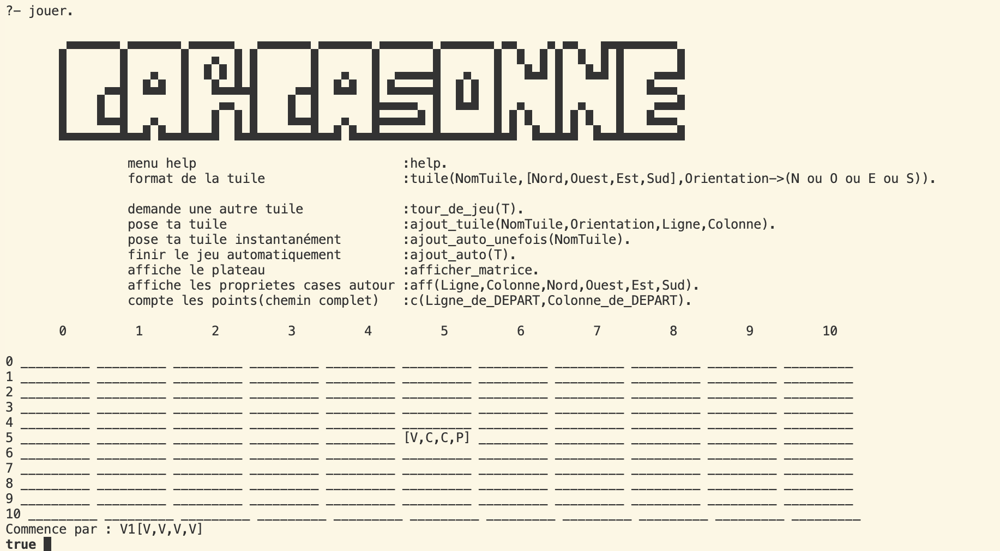
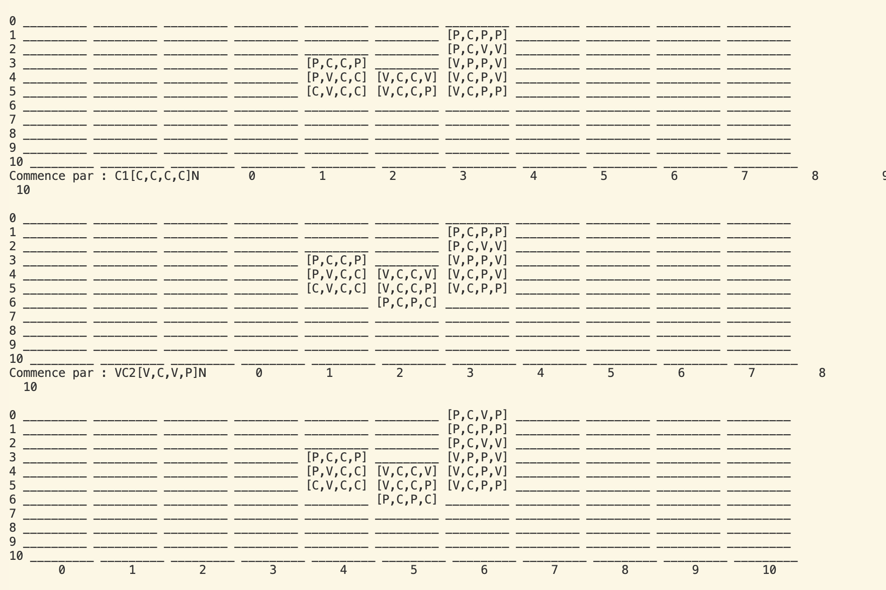

The Prolog version of Carcassonne is a computer adaptation of the classic board game. Play this medieval strategy game using your terminal. Place tiles, claim territories, and enjoy the automatic completion mode to assist you when you're unsure where to place your tile.
